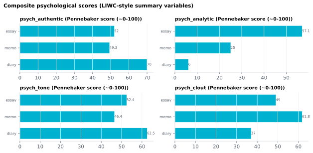

On this page
6.2.6Composite psychological scores (LIWC-style summary variables)
Four document-level scores that summarize the style of a whole passage from the relative frequencies of different word types.
6.2.6.1What it is
Four document-level scores that summarize the style of a whole passage from the relative frequencies of different word types. Each is on a 0–100 scale (higher = more of the named quality). They describe the text, not the speaker's psychology directly.
- Analytic (
psych_analytic) — how formal / categorical vs. narrative / personal the language is. Pushed up by articles (a, an, the) and prepositions (in, of, with) — words that name and relate concepts — and down by pronouns, auxiliary verbs, conjunctions, adverbs and negations, which are hallmarks of informal storytelling. High = an expository register (a lecture, an essay); low = a personal narrative. - Clout (
psych_clout) — the social confidence / authority the language projects. Up with second- and third-person pronouns (you, we, they); down with first-person singular (I, me, my) and tentative wording. High = authoritative / focused on others; low = self-focused / tentative. - Authentic (
psych_authentic) — how personal and unguarded the wording is. Up with first-person-singular and present-tense immediacy. High = candid / self-disclosing; low = guarded, distanced, or carefully constructed. - Tone (
psych_tone) — emotional valence: the balance of positive vs. negative emotion words. 50 = neutral or balanced; >50 = positive emotion dominates; <50 = negative dominates.
⚠️ These are relative descriptors, not LIWC values. Compare passages within your own dataset; do not read the numbers as published LIWC scores. Official LIWC reports corpus-standardized percentiles (1–99), whereas these are raw linear combinations clamped to 0–100 (see Math), so they live on a different scale.
ℹ️ Not produced by LIWC software. These reproduce, license-clean, the kind of summary scores LIWC popularized, but compute them from spaCy POS/morphology + a free valence lexicon — no LIWC dictionary is involved. SensiExtractor cannot bundle LIWC: its license forbids using the dictionary outside LIWC's own software. For official LIWC-22 Analytic / Clout / Authentic / Tone numbers, run LIWC's software — licensing at https://liwcsoftware.onfastspring.com/.
6.2.6.2See it

6.2.6.3In your output
| stimulus_id | psych_authentic | psych_analytic | psych_tone | psych_clout |
|---|---|---|---|---|
| LJ002-0321 | 50 | 31.67 | 50 | 48.33 |
| LJ003-0007 | 50 | 38.71 | 50 | 47.42 |
| LJ005-0063 | 51.54 | 19.62 | 57.69 | 43.85 |
| LJ005-0066 | 52.96 | 42.96 | 50 | 51.85 |
| LJ019-0027 | 50 | 43.33 | 54.17 | 48.33 |
| predictable | 53.33 | 28.33 | 50 | 66.67 |
| surprising | 53.33 | 28.33 | 50 | 66.67 |
6.2.6.4MATLAB
% Load the document-level table (one row per stimulus)
T = readtable('document/documents_summary_<timestamp>.csv', 'TextType', 'string');
T.Properties.VariableNames % every column in the file
head(T(:, {'stimulus_id', 'psych_authentic', 'psych_analytic', 'psych_tone', 'psych_clout'}), 10) % this feature's columns (first rows)
% Plot
barh(T.psych_authentic); yticks(1:height(T)); yticklabels(T.stimulus_id); xlabel('psych_authentic')
6.2.6.5How it's computed
Implemented in sensi/extractors/psych_composite.py:compute_psych_composite.
Each score is a linear combination of the percentage of word tokens
in each category:
analytic = 30 + 0.8·%article + 0.7·%prep − 0.4·(%pronoun + %ipron
+ %auxverb + %conj + %adverb + %negate)
clout = 50 + 0.8·%we + 0.8·%you + 0.5·%shehe + 0.5·%they
− 0.8·%i − 0.4·%ipron
authentic = 50 + 0.8·%i + 0.4·%discrep + 0.2·%focuspresent
− 0.4·%we − 0.2·%focusfuture
tone = 50 + %posemo − %negemo
All four are clamped to [0, 100].
Provenance — read before citing. Only Analytic traces to a
published formula. It follows the Categorical-Dynamic Index (CDI) of
Pennebaker 2014 — 30 + article + preposition − personal pronoun − impersonal pronoun − auxiliary verb − conjunction − adverb − negation —
which loads those eight function-word classes with exactly these signs.
Two differences from the paper: the CDI standardizes each category
(z-scores) and weights them equally, whereas this implementation uses
raw percentages with the fractional weights above. The result is
a simplified variant of the CDI, not the CDI itself.
Clout, Authentic and Tone are LIWC2015 / LIWC-22 summary variables (Pennebaker 2015); their official algorithms are proprietary and output corpus-standardized percentiles, not the linear forms above (LIWC App). The coefficients here are an in-house approximation chosen to mirror the documented direction of each variable (which word classes raise or lower it) — they are not the LIWC algorithm and are not published with these values anywhere. This is why the scores are only meaningful relative to each other across your own stimuli (see the ⚠️ note under Meaning).
6.2.6.6Why spaCy + VADER can reproduce these (and Empath can't)
The Pennebaker formulas are built almost entirely from grammatical proportions — % articles, % prepositions, % pronouns by person/number, % auxiliaries, % conjunctions, % negations. Those are exactly the categories spaCy's POS tagger and morphological analyser produce, and it does so accurately because tagging closed grammatical classes is a well-defined, treebank-trained task. The only semantic input is Tone (positive vs. negative emotion), supplied here by VADER's word-level valence lexicon (Hutto 2014).
Empath cannot stand in for this: its categories are content/topic clusters (joy, money, violence…) generated by word-embedding similarity (Fast 2016) — it has no "% articles" or "% auxiliary verbs", so it cannot feed the Analytic / Clout / Authentic formulas.
6.2.6.7In the code
Source: sensi/extractors/psych_composite.py:compute_psych_composite. It reads
the spaCy-parsed token DataFrame the pipeline already produces (columns
token, upos, lemma, feats, dep_rel) and maps each token to the
Pennebaker categories:
| Category | How it is detected |
|---|---|
| article | token ∈ {a, an, the} |
| prep | upos == ADP |
| pronoun / ppron / ipron | upos == PRON; personal pronouns matched against fixed closed-class English sets, the rest counted as impersonal |
| i / we / you / shehe / they | token ∈ the corresponding closed pronoun set (incl. object, possessive and contraction forms) |
| auxverb / adverb / conj | upos ∈ AUX / ADV / {CCONJ, SCONJ} |
| negate | token ∈ negation set, or dep_rel == 'neg', or Polarity=Neg in feats |
| discrep | token ∈ {should, would, could, ought, …} |
| focuspresent / focusfuture | Tense=Pres in feats / token ∈ {will, shall, gonna} |
| posemo / negemo | sign of the token's VADER valence |
⚠️ The closed pronoun sets, the negation and discrepancy word lists, and
the zero-valence split for posemo/negemo are reconstructions of LIWC's
category contents (LIWC's .dic cannot be used here). The grammatical
mappings are reliable — spaCy tags those classes accurately — but the
hand-built lexical sets (discrepancy words especially) and the valence
threshold are judgement calls. Another reason to treat the scores as
relative rather than calibrated.
The word total excludes punctuation/symbol/space tokens. Empty or
word-less input → all four are NaN. The four toggles are independent —
disabling any one suppresses only that column. The scores do not depend
on the semantic-domain backend (the card is always available).
VADER is loaded lazily. If vaderSentiment is not installed, Tone is
emitted as NaN (honestly "not computed") rather than a misleading
neutral 50; Analytic, Clout and Authentic need no lexicon and are
unaffected.
6.2.6.8Library
from extractors.psych_composite import compute_psych_composite
scores = compute_psych_composite(token_df) # token_df from extractors.text_parser.parse
# {"authentic": 47.2, "analytic": 78.5, "tone": 62.1, "clout": 35.9}
6.2.6.9EEG rationale
The composite scores are stimulus-level discourse-style descriptors — useful as covariates when matching stimuli on writing register (authentic personal narrative vs. formal lecture) or for studying discourse-level effects:
- Tone aggregates the per-word positive vs. negative emotion balance
of a passage. Emotional words modulate ERPs in valence- and
arousal-dependent ways (Citron 2012 review); arousal effects
appear early in the early posterior negativity (EPN), with
interactive arousal × valence effects for high-arousal positive and
low-arousal negative words (Recio 2014). At the passage level,
psych_toneis therefore expected to predict the cumulative emotional load of a stimulus rather than a single ERP component. - Analytic vs. narrative writing engages different processing dynamics — text genre / register affects reading rate and comprehension fluency in connected text (Wallot 2013).
- Clout and Authentic are less validated in ERP literature but are standard discourse-psychology descriptors and can be used as exploratory covariates.
6.2.6.10Papers
- Pennebaker 2014 Pennebaker, Chung, Frazee, Lavergne, Beaver. When small words foretell academic success: The case of college admissions essays. PLOS ONE. doi:10.1371/journal.pone.0115844 — source of the Categorical-Dynamic Index behind
psych_analytic(this tool uses a simplified, non-standardized variant; see Math). - Pennebaker 2015 Pennebaker, Boyd, Jordan, Blackburn. The Development and Psychometric Properties of LIWC2015. UT Austin technical report. doi:10.15781/T29G6Z — defines the LIWC summary variables (Analytic, Clout, Authentic, Tone) whose directions
psych_clout/psych_authentic/psych_toneapproximate. The exact algorithms are proprietary. - LIWC App LIWC. Interpreting LIWC output — the summary variables. https://www.liwc.app/help/liwc — confirms the summary scores are proprietary algorithms reported as corpus-standardized percentiles (1–99), i.e. on a different scale from the raw 0–100 scores here.
- Hutto 2014 Hutto & Gilbert. VADER: A Parsimonious Rule-Based Model for Sentiment Analysis of Social Media Text. ICWSM 2014. aaai.org — the valence lexicon supplying Tone.
- Fast 2016 Fast, Chen, Bernstein. Empath: Understanding Topic Signals in Large-Scale Text. CHI 2016. arXiv:1602.06979 — why Empath's categories cannot feed these formulas.
- Citron 2012 Citron. Neural correlates of written emotion word processing: A review of recent electrophysiological and hemodynamic neuroimaging studies. Brain & Language 122(3), 211–226. doi:10.1016/j.bandl.2011.12.007
- Recio 2014 Recio, Conrad, Hansen, Jacobs. On pleasure and thrill: The interplay between arousal and valence during visual word recognition. Brain & Language 134, 34–43. doi:10.1016/j.bandl.2014.03.009
- Wallot 2013 Wallot, Hollis, van Rooij. Connected text reading and differences in text reading fluency in adult readers. PLOS ONE 8(8), e71914. doi:10.1371/journal.pone.0071914 — text type / register affects reading fluency in adult readers.